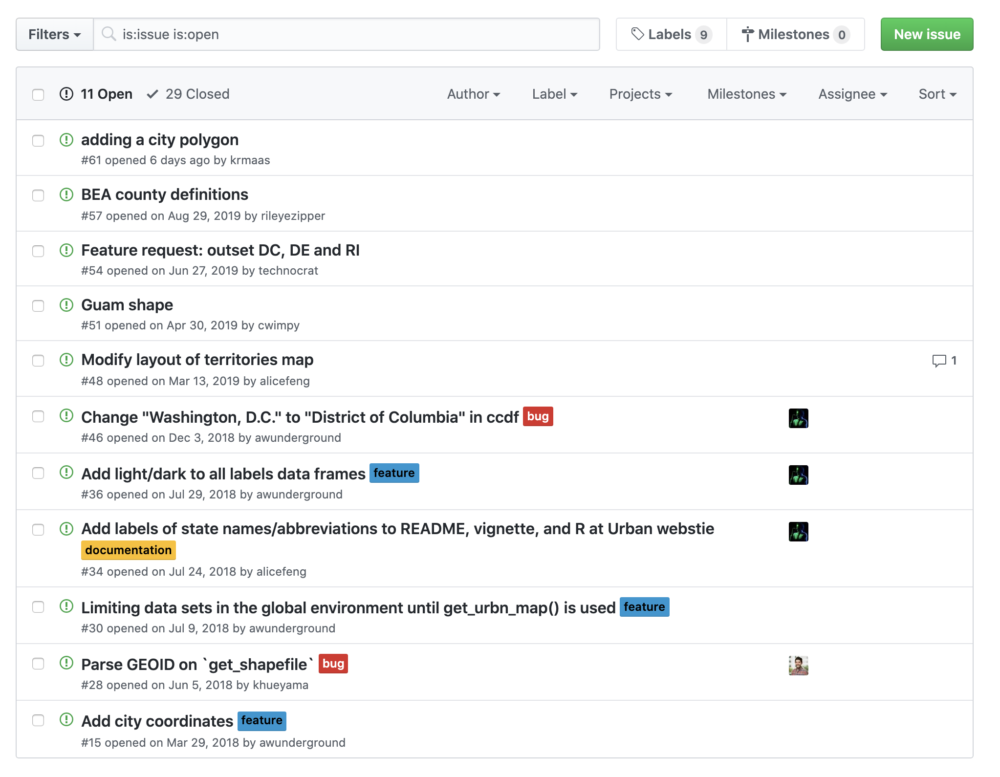
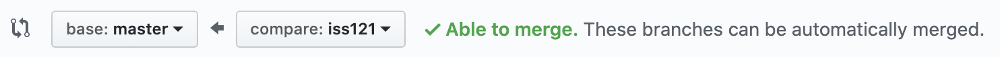
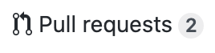
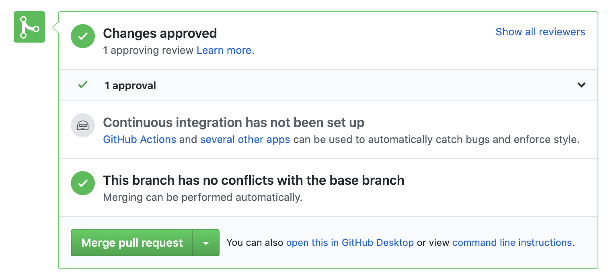
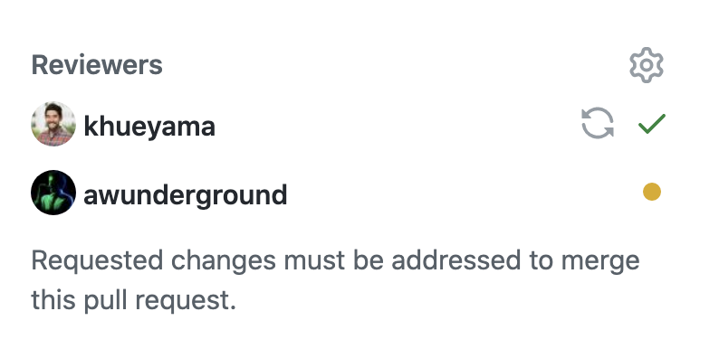
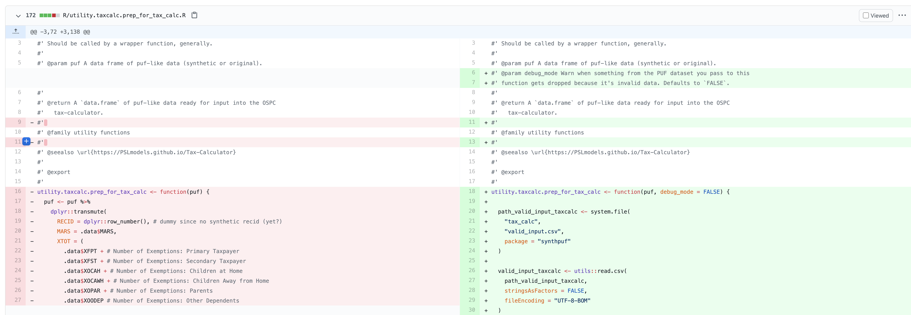
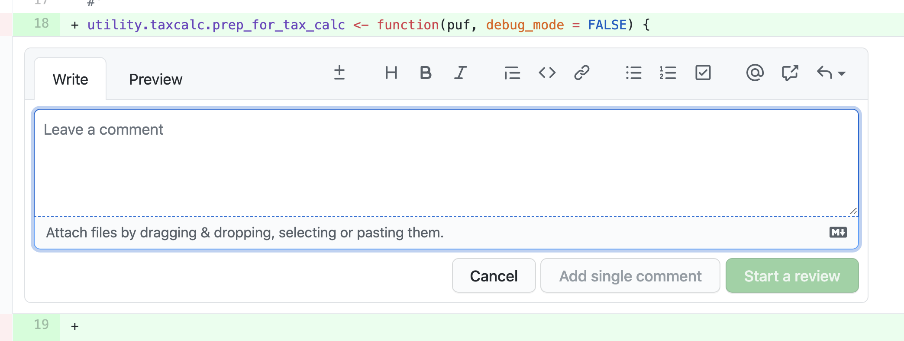
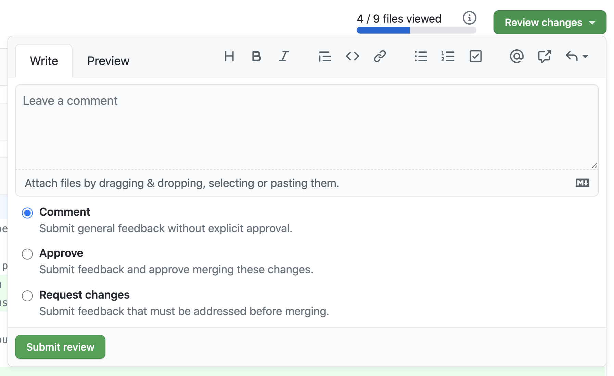

7 Advanced Git and GitHub
-
Image by Pierre-Yves Beaudouin
{kind=link}
7.1 The Issue > Branch > PR Workflow
There are several popular workflows for collaborating with Git and GitHub. This section outlines an issue-branch-pr workflow which is extremely common and which we use regularly.
7.1.1 GitHub issues
GitHub issues are a GitHub project management tool for managing to-dos and conversations about a code base. This feature of GitHub can be seen as a built-in alternative to project management software like Jira, Trello, and monday, among many others.

library(urbnmapr)For each substantial change to the code base, open a GitHub issue.
7.1.2 Working with Branches
Branching Motivation
The track changes feature in programs like with Microsoft Word follows each and every keystroke or click. In the previous chapter, we compared git to a super-charged version of track changes, and we think this comparison is fair. However, code is different than prose. If a program is not working, it isn’t desirable to document and share a change until that change creates a different, but still working, program. Working with other developers can complicate this desire to always commit sensible changes.
Meet branching. Branching allows multiple versions of the same program to be developed simultaneously and then merged together when those versions are ready and operational.
Branching Diagrammed
Consider a more advanced Git workflow. We need a way to:
- Create branches
- Switch between branches
- Combine branches

A second stylized (and cute!) example of this workflow can be seen in this tweet from Jennifer Gilbert. The octopus on the left side of the image represents an existing, operational piece of code. Two programmers create separate copies (branches) of that code, work to create independent features (represented by the heart glasses and a cowboy hat), and then merge those features back to the master branch when those features are operational.
How to branch
git branch prints out important information about the available branches in a repo. It is similar to git status in that it provides useful information while not making any changes.
git switch -c <new branch name> creates a new branch and then navigates you to the new branch.
git switch <new branch name> navigates you from your current branch to the specified branch. It is only possible to switch between branches if there are no uncommitted changes. 1
- Use
git switch mainto navigate to the main branch. Usegit pull origin mainto update your local version of themainbranch with any remote changes. - Use
git switch -c <new branch name>to create and switch to a new branch with the nameiss<number>, whereis the issue number from GitHub. - Work as if you are on the main branch but push to branch
iss<number>withgit push origin iss<number>.
Jenny Bryan provides a more thorough background.
7.1.3 Pull requests
The easiest way to merge branches is on GitHub with pull requests. When you are ready to merge the code, push all of your code to your remote branch.
- On GitHub, click the new pull request button.
- Then set a pull request from the branch on the right to the branch on the left.

Navigate to the pull requests page and review the pull request.
Merge the pull request:

7.1.4 Putting it all together
- Open a GitHub issue for a substantial change to the project
- Create a new branch named after the GitHub issue number
- After one or more commits, create a pull request and merge the code
7.1.5 Merge conflicts
If you run into merge conflicts, either follow the GitHub instructions or follow Jenny Bryan’s instructions for resolving the conflict at the command line. Do not panic!
7.2 Collaboration Using Git + GitHub (with branching)
Our workflow so far has involved only one person, but the true power of GitHub comes through collaboration! There are two main models for collaborating with GitHub.
- Shared repository with branching
- Fork and pull
We have almost exclusively seen approach one used by collaborative teams. Approach two is more common when a repository has been publicized, and someone external to the work wants to propose changes while lacking the ability to “write” (or push) to that repository. Approach one is covered in more detail in the next chapter.
To add a collaborator to your repository, under Settings select “Collaborators” under the Access menu on the left. Select the “Add people” button and add your collaborators by entering their GitHub user name.
Then, adopt an Issue > Branch > PR Workflow. Always work on different branches.
7.3 Code Reviews in GitHub
GitHub’s strength is code reviews.
This page outlines the functionality.
7.3.1 1. Request
Pull requests can reconcile code from different branches (e.g. iss001 and main).
For example, I will put in a pull request from iss001 to main. At this point, a reviewer will be requested in the pull request.

7.3.2 2. Review
The code will not be merged to main until the reviewer(s) approve the pull request.
GitHub will generate a line-by-line comparison of every line that is added or removed from iss001 to main.

Reviewers can add line-specific comments in GitHub.

7.3.3 3. Approve
Reviewers can also add overall comments before approving or requesting changes for the pull request. If additional changes are added, GitHub will highlight the specific lines that changed in response to the review–this will save the reviewer time on second or third reviews of the same code.

Once the code is approved, the branch can be merged into the main branch where it can referenced and used for subsequent analyses.
7.4 Scope of Reviews
Most of my projects use code reviews in GitHub. All code and documentation go through a review process.
It is possible that changes will be requested before the completion of a code review. For example, a reviewer may send the code back to the analyst if the code isn’t reproducible (i.e. doesn’t run) or if the documentation is insufficient for th reviewer to follow the logic.
The scope of the review will involve the following three levels:
- Reproduction of results.
- Code should not error out. Warnings and notes are also cause for concern.
- The code should exactly recreate the final result.
- A line-by-line review of code logic.
- Code script should include top-level description of process and what the code accomplishes.
- Does the author’s process and analytical choices make sense given the metric they are trying to calculate? Is the process implemented correctly?
- Variable construction: What is the unit of analysis? Is it consistent throughout the dataset?
- Are new variables what they say they are (check codebooks)?
- Check whether simple operations like addition/subtraction/division exclude observations with missing data.
- Does the researcher subset the data at all? Is it done permanently or temporarily?
- How are missing values coded?
- Look at merges/joins and appends - do the data appear to be matched appropriately? Are there identical non-ID variables in both datasets? How are non-matching data handled or dropped?
- Is the correct geographic crosswalk used?
- Are weights used consistently and correctly?
- Code Architecture/Readability.
- Is the code DRY (don’t repeat yourself)? If code is repeated more than once, recommend that the writer turn the repeated code into a function or macro.
- Is there a place where a variable is rebuilt or changed later on?
- Are values transcribed by hand?
- “Messy but error-free” is not an acceptable status for finalized code. Code should be easy to follow, efficient, reproduceable, and should reflect well on the organization and project team.
- Public Release Is the code clearly commented for public release (e.g., no use of abbreviations or acronyms) Is the code free from any licenses, PII, or proprietary information?
7.5 Extended Example
Let’s explore the Boosting Upward Mobility from Poverty GitHub repository to explore this workflow.
7.6 Conclusion
GitHub is a great project management tool. It can be integrated perfectly into the Issue > Branch > PR workflow. Branching is useful to allow separate collaborators to work on different features of a codebase simultaneously without interrupting each other. When conflicts do arise, do not fret! Merge conflicts are normal and can be resolved easily.
7.6.1 More resources
- Git Cheat Sheet
- Happy Git and GitHub for the UserR
- Git Pocket Guide
- Getting Git Right
- Git Learning Lab
- The Urban Institute’s Reproducibility Website and its Git and GitHub page
git checkoutis another exceedingly common git command. Many resources on the internet may encourage the usage ofgit checkout <branch name>to switch branches, orgit checkout -b <new branch name>to create a new branch and then switch to it. This is okay! However,git checkoutalso has other capabilities, and that glut of functionality can be confusing to users. This makesgit switchthe simpler, more modern option.]↩︎